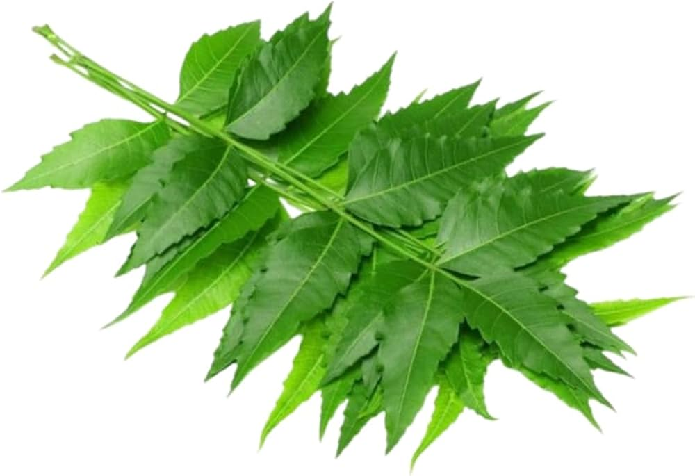
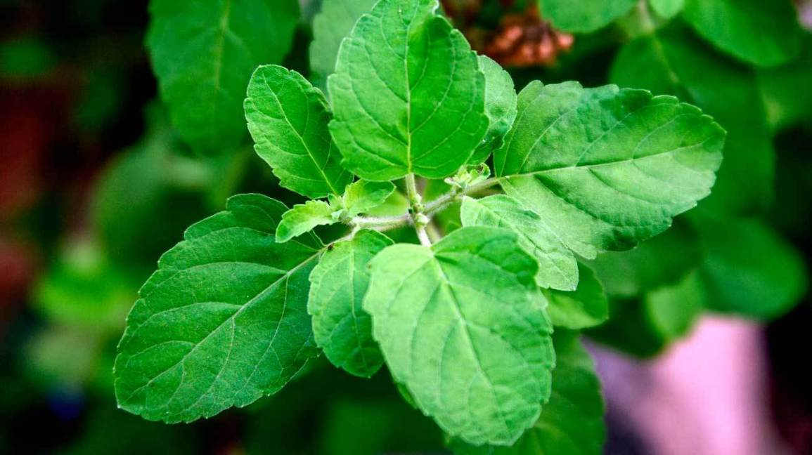
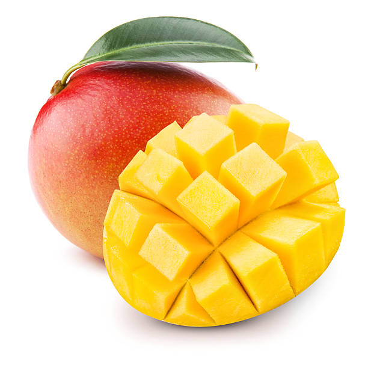
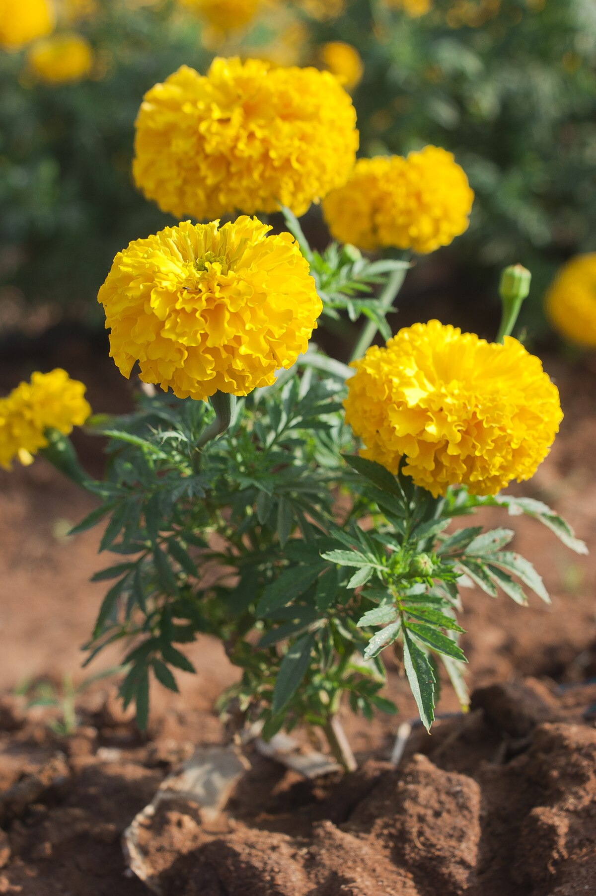

Care Instructions: Neem prefers full sun, well-drained soil. Water moderately during dry periods. Tolerant to drought and pests.

Care Instructions: Requires full sun, deep watering especially when young. Thrives in tropical and subtropical climates.


Care Instructions: Grows best in warm, sunny places. Water regularly but do not overwater. Prefers well-drained soil.
Care Instructions: Prefers full sunlight and deep, well-drained soil. Water young plants regularly; mature trees are drought tolerant.
Care Instructions: Requires full sun and well-drained soil. Water moderately; deadhead spent flowers for prolonged blooming.
Care Instructions: Thrives in full sun to partial shade. Water regularly but avoid waterlogging. Prefers fertile, well-drained soil.

Care Instructions: Prefers full to partial sunlight. Requires well-drained soil and moderate watering. Tolerates a range of soil types.
Care Instructions: Needs full sunlight and still, shallow water. Use rich, loamy soil in containers or ponds. Avoid water disturbance.